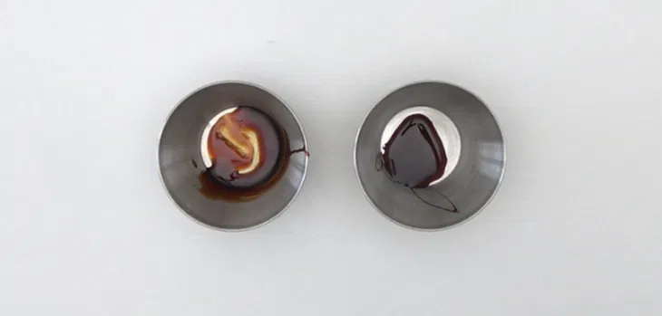
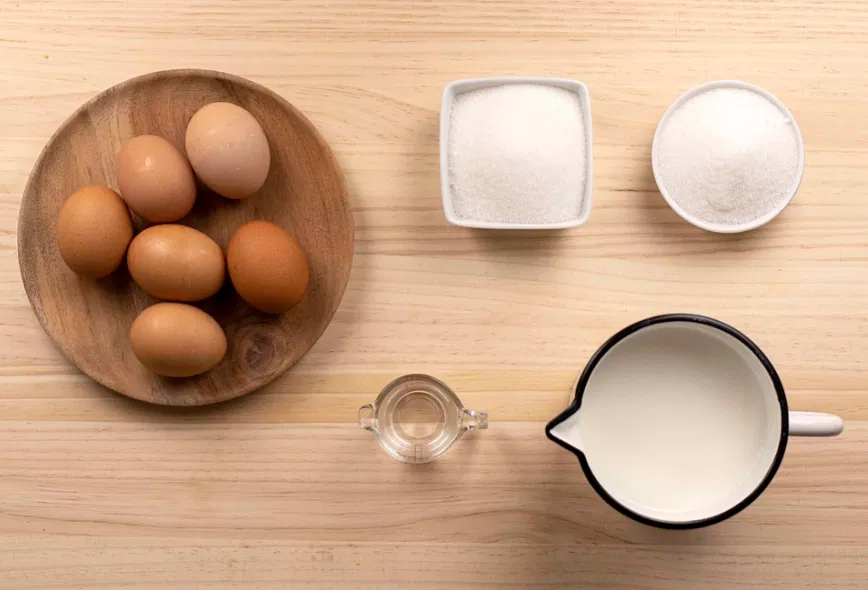
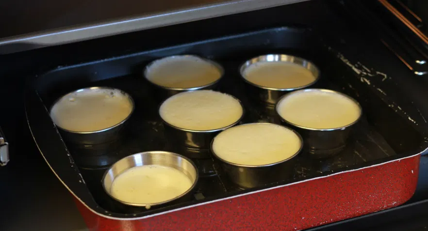

¿Quieres preparar un flan de huevo de manera fácil y sencilla? Entonces esta es tu receta. Hay muchos postres preferidos en casa, pero en esta familia de golosos sin duda uno de los que más gusta es el flan. Esta es una de las recetas de postre hecho con huevo hace las delicias de niños y mayores.
Un clásico en todas las casas que se ha convertido en uno de los postres más famosos de España. Este flan es una de esas recetas caseras que no deben faltar en ningún recetario. En la receta de hoy os explicaré como hacerlo bien, paso a paso, con fotos e incluso vídeo para que tengáis la receta del flan de huevo casi perfecta.
Receta de flan de huevo casero
Preparación del caramelo
Ponemos un cazo o una sartén al fuego a temperatura media para que alcance temperatura. Añadimos los ingredientes en el siguiente orden: 5 cucharadas de azúcar granulada blanca y un poco de agua (3 cucharadas).
Dejamos a fuego medio sin remover (al principio no debemos mover el azúcar con cuchara de madera porque se apelmazará). Veremos como poco a poco se empiezan a formar pequeñas burbujas y el azúcar cambia de color.
Cuando suceda esto removemos, ahora sí, con una cuchara de madera y ayudamos a que se mezcle todo.
Retiramos del fuego y seguimos removiendo hasta que alcance ese color miel tostado del caramelo.
Dejamos que se temple un minuto y caramelizamos las paredes de recipiente de las flaneras o donde vamos a preparar el flan. Echamos el caramelo primero en el fondo. Vamos girando o ladeando poco a poco por las paredes de los moldes hasta que esté todo impregnado de caramelo. Dejamos que se enfríe el caramelo hasta que esté medio duro.

Cómo hacer el flan de huevo
La calidad de los huevos es fundamental para preparar un flan casero de calidad. Separamos la yema de la clara de 6 huevos, las claras las podéis utilizar para otras recetas, no las tiréis. A esas yemas le añadimos tres huevos enteros grandes, le echamos el azúcar y la leche entera. Batimos todo hasta que quede una masa cremosa y con un poco de espuma. Reservamos.
Rellenamos la bandeja central del horno con agua. Subimos la temperatura del horno a 200º C hasta que empiece a hervir el agua.
Ponemos la crema de flan en pequeños moldes de flan o en una flanera individual. Los cubrimos con papel de aluminio y los metemos al horno. Siempre en la bandeja con el agua durante 50-60 min aproximadamente a unos 200º C, hasta que los flanes estén cuajados y dorados. El horno no se manchará nada de nada pero tened cuidado de no quemaros con el agua de la bandeja.


Preparación final del flan
Os recomiendo que los últimos 10 minutos de cocción le quitéis el papel de aluminio para que pille un poco de color la parte de arriba. Aunque luego no se vea pues le daremos la vuelta.
Al cabo de los 50 minutos puedes probar con un cuchillo para ver si están totalmente cuajados. Si sale limpio ya estarán listos, si no los dejamos un poquito más.
Dejamos enfriar a temperatura ambiente y después los metemos en la nevera, estarán mucho mejor fríos y de un día para otro. Desmoldamos con cuidado en un plato para que se bañe todo el flan con el caramelo y a disfrutar. ¡De rechupete!